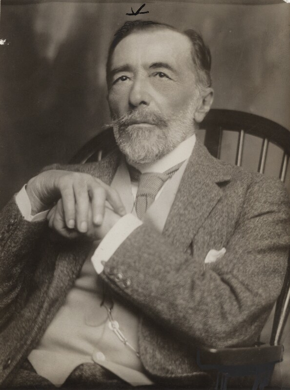

Joseph Conrad (3 Dec. 1857 – 3 Aug. 1924)
Joseph Conrad was a Polish-British novelist. He was regarded as a modernism pioneer. He was a sailor when he was young. In his middle age, he began to write. He totally wrote 13 novels and 28 short stories.
Works
- Heart of Darkness (1899)
- Lord Jim (1900)
- Nostromo (1904)
- The Secret Agent (1907)

Heart of Darkness
In Heart of Darkness, we can see modernism, realism, racial discrimination, psychoanalysis, feminism, colonial or anti-colonial, post-colonialism. The title of the novel, Heart of Darkness has multiple meanings. It can
refer to the wild of the Dark Continent. It can also refer to the greed, jealousy, and intrigue of human nature. It refers to the European colonial trading companies which move further inland, and also refers to white colonists'
filthy hearts and the Africans' uncivilized thoughts.
Heart of Darknessis a novel about adventure in the jungle. It has the features of an adventure story: horror, mystery, exotic scenery, escape, tracking, ambush
and death. However, it is not just an adventure story or a personal travelogue. In fact, it is a colonial novel which combines human desire, historical sin, colonial economy, and moral reflection. We can analyze this novel from
many perspectives. It has received a variety of different evaluations